Web search with citations
Answers are grounded in the web, with sentence-level citations. Tap a source to see where a claim came from.
AI assistant for Android
Hold the power button and sparky opens on top of whatever you are doing. Ask, circle something on screen, and get answers with sources you can check.
Android only. No ads, no trackers on this site.
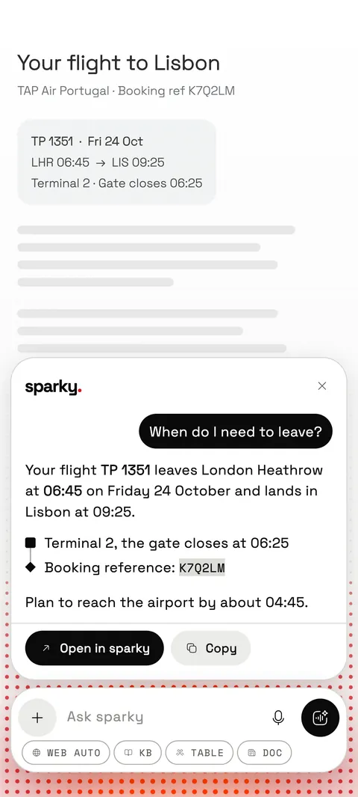
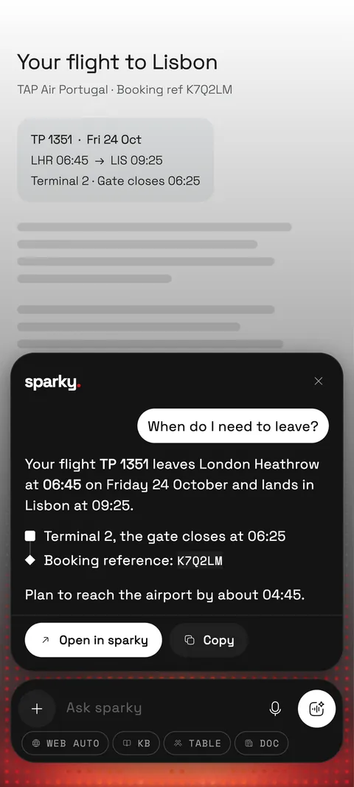
On your power button
Make sparky your phone's assistant and it is one hold away, over any app. Reading a booking, a menu, a message? Ask about what is on screen.
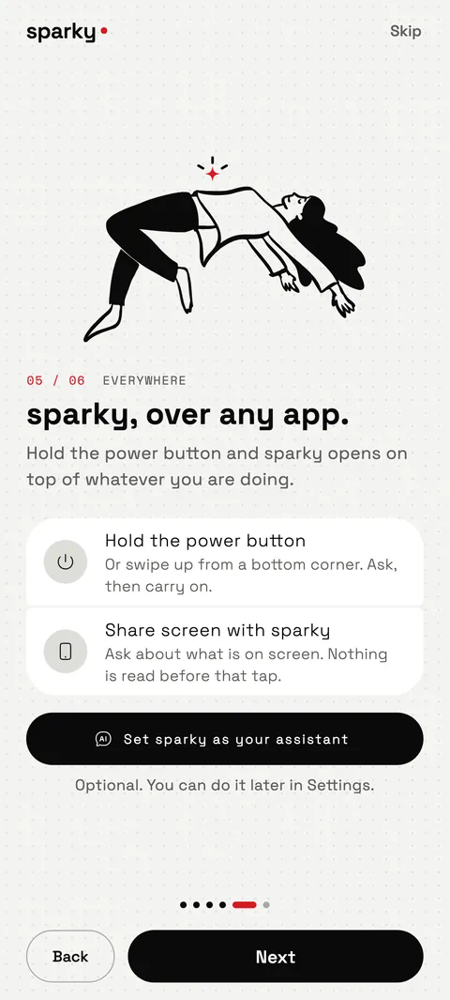
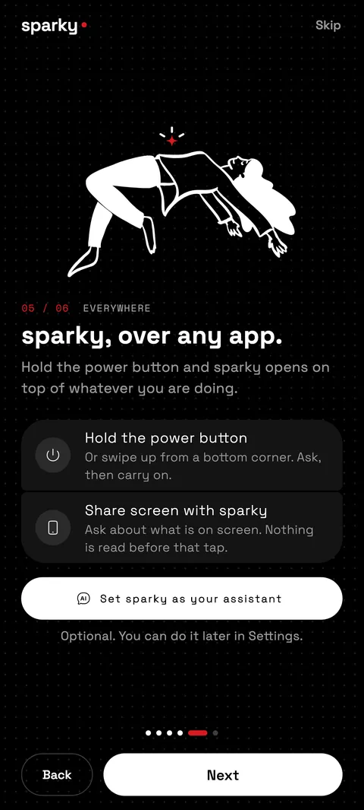
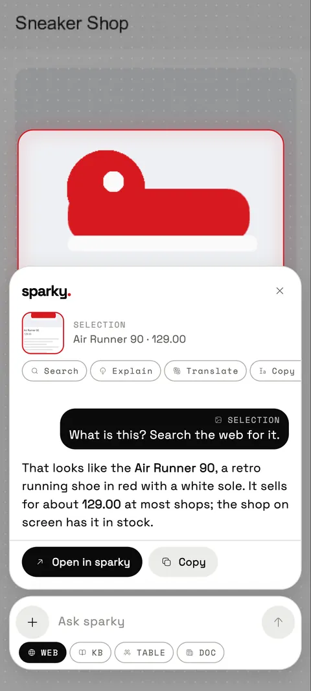
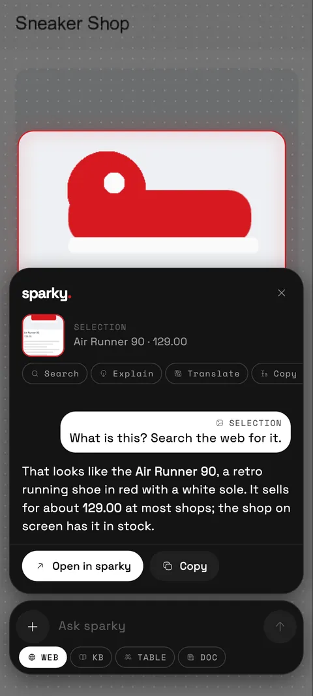
Answers you can trust
Answers are grounded in the web, with sentence-level citations. Tap a source to see where a claim came from.
Factual questions search the web first, so sparky doesn't answer from memory when it could look it up.
When sparky can't tell, it says so instead of guessing. The same goes for a blank capture or a video it can't read.
Bring your stuff
Save notes and documents for sparky to search, attach files to a chat, or link the apps you use and ask about them in plain words.
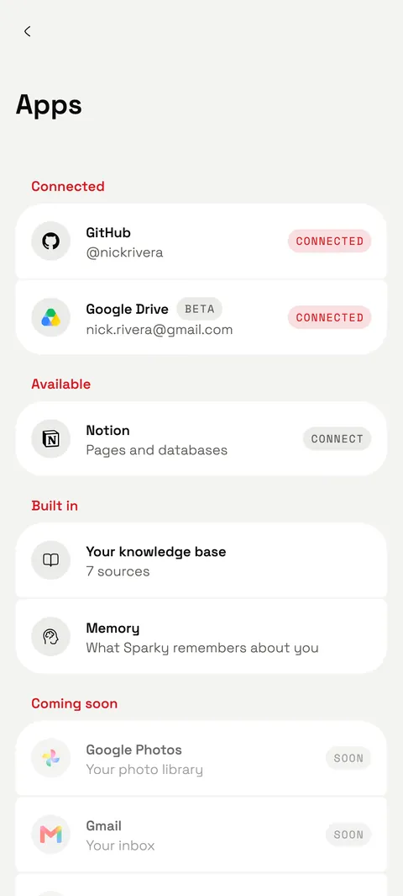
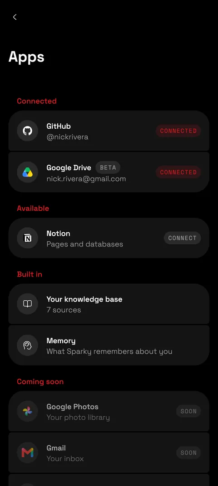
Cards that do things
Ask for songs and get a playlist. Ask the way to the airport and get directions. sparky turns the answer into something you can act on.
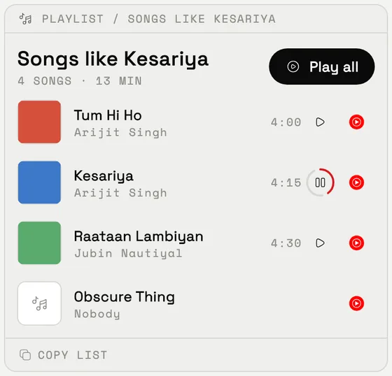
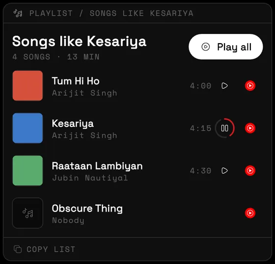
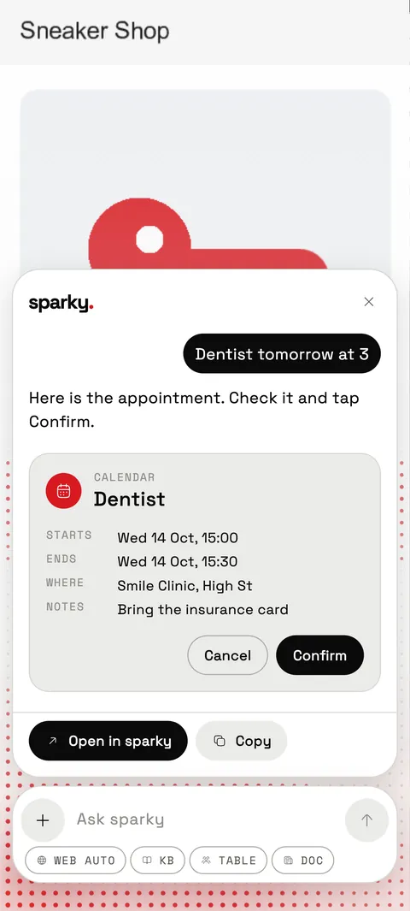
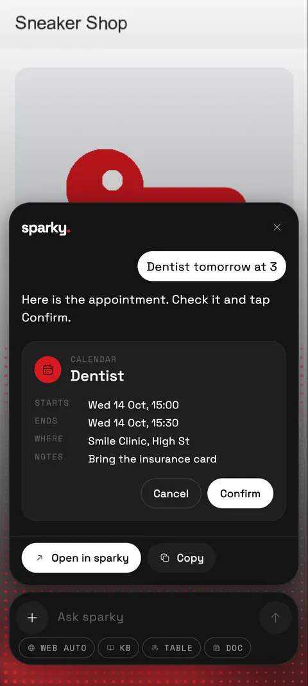
Many models, one app
sparky picks a model for you and shows which one wrote every answer. Prefer your own account? Bring your own keys.
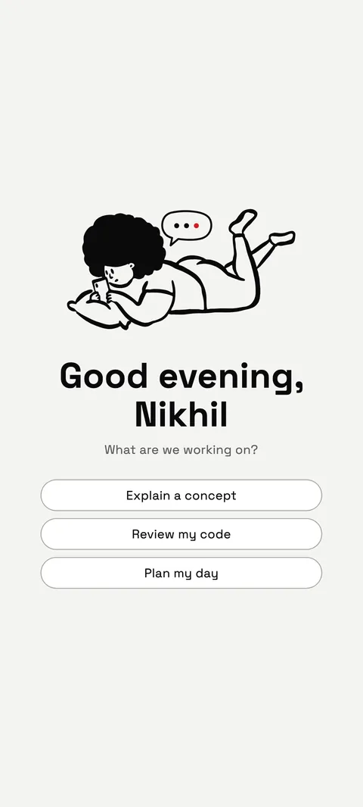
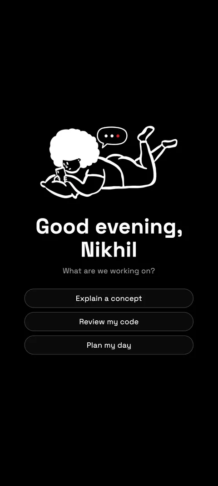
Private by design
We don't sell your data, don't use it for advertising, and don't use your content to train AI models.
Your chats, memories, notes and files are encrypted at rest on our servers with a key of their own for each user.
No advertising and no trackers. Crash reports are optional, never include your chats, and you can turn them off.
Weather and nearby answers fit your city without the Android location permission. Switch it off, or set your own city.
See, edit or switch off what sparky remembers. Delete a chat, a file, or your whole account in the app.
To write answers, your messages are sent to third-party model providers. Read the full privacy policy.
Updates built in
New versions download inside sparky and install in a tap. A dropped connection no longer restarts the download from zero, and there is a Wi-Fi only option to save your data. sparky asks once per version, at a quiet moment.
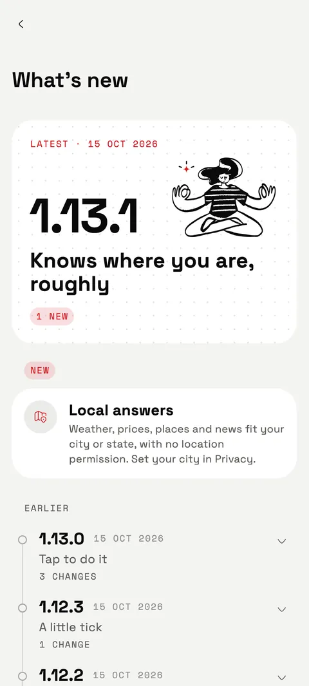
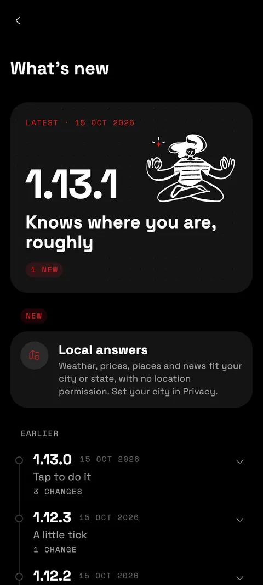
What's new
Questions
Yes, free to use with a fair daily limit. sparky routes your questions across free cloud models, and you can add your own provider keys to run chats on your own account.
Android phones. sparky is an Android app, and there is no iPhone version. The power-button assistant and circle to search use Android's assistant setting, which sparky walks you through on first launch.
Tap Download for Android on this page. Your phone may ask you to allow installs from your browser the first time. After that, new versions download inside sparky and install in a tap.
Chats and files live in your sparky account on our server, in private storage, encrypted at rest with a key of its own for each user. Only your account can see them. To write answers, your messages are sent to third-party model providers. You can delete any chat or file, or your whole account, in the app.
No. For weather and local answers sparky works out a rough location (city, state, country) only when you ask something local, without the Android location permission or GPS. You can switch it off in Settings, Privacy, or set your own city.
Yes. Add a key from Groq, OpenRouter, NVIDIA or Ollama and your chats run on it. You can test a key in one tap and see requests, tokens and models used. Only you can see that usage.
One hold of the power button to your next answer.